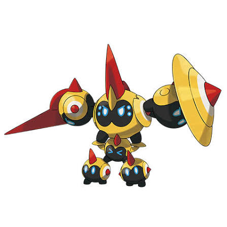
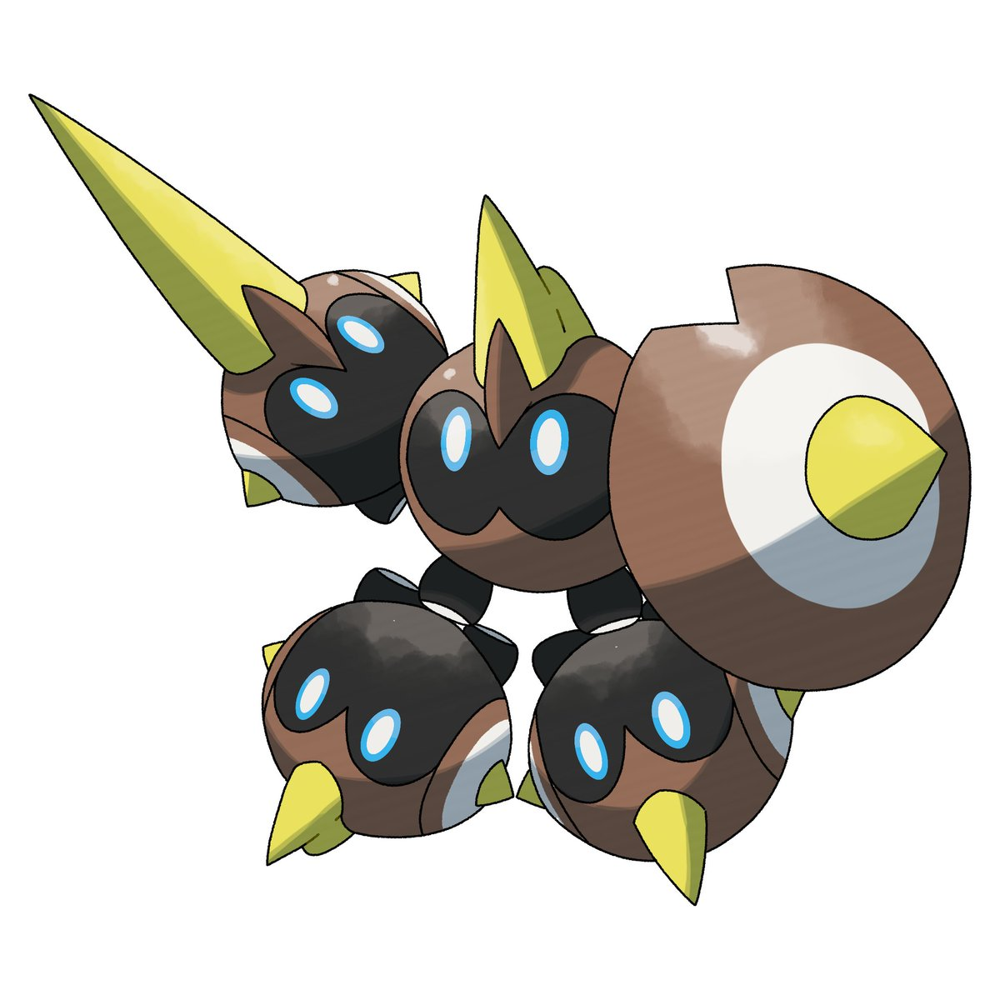

What is Mega Falinks Raid Boss?
Mega Falinks is a Mega Raid Boss in Pokémon GO, meaning it’s a powered-up version of Falinks that players battle in Mega Raids to earn Mega Energy, allowing them to temporarily evolve their own Falinks. Falinks itself is a unique pure Fighting-type Pokémon made up of six coordinated units, which makes its Mega form especially interesting in battle due to its aggressive and formation-based theme.
Why Mega Falinks Matters
Meta Importance:
- As a Fighting-type Mega Pokémon, Mega Falinks can boost:
- Fighting-type attacks of all players in raids
- Provide strong DPS against bosses weak to Fighting (like Normal, Rock, Steel, Ice, Dark)
- However, compared to top-tier Fighting Megas like Mega Blaziken or Mega Lucario, it may not be the absolute best, but still useful.
Mega Energy Farming
- Raiding Mega Falinks gives Mega Energy, required to Mega Evolve your own Falinks.
- Once unlocked, future Mega Evolutions cost less energy.
Pokédex & Collection Value
- Important for Mega Pokédex completion
- Likely to have a shiny variant, increasing its collector appeal
Raid Utility
- Boosts team performance in group raids
- Useful if you're coordinating with others using Fighting-type teams.
Difficulty Level
Overall Difficulty: Medium
Player Requirements
| Scenario | Difficulty | Notes |
|---|---|---|
| Solo | Very Hard / Not Recommended | High bulk and damage output |
| Duo | Hard | Requires top counters + high-level players |
| Trio | Moderate | Achievable with good counters |
| 4-6 Players | Easy | Comfortable win |
| 7+ Players | Very Easy | Quick raid clear |
Why It's Challenging
- Fighting-type bosses hit hard and fast
- Mega Falinks may have strong moves like:
- Close Combat
- Superpower
- Requires good counters like:
- Psychic-types
- Flying-types
- Fairy-types
Weather Impact
- Cloudy weather boosts Fighting-type moves → makes raid harder
- Windy weather boosts your Psychic/Flying counters → easier raid
Best Counters: Mega Alakazam, Mega Rayquaza, Shadow Mewtwo
Tip: Use Psychic-type moves for maximum damage
Raid Strategy
Focus on Psychic-type attackers. Dodge charged moves to survive longer.
Best Moves
Confusion, Future Sight, Psychic are highly effective.
Weather Boost
Cloudy weather boosts Fughting-type moves.
Falinks Raid Combat Guide
Fast Moves (Quick Moves)
Fast moves are the basic attacks a Pokémon uses repeatedly. Key Features:
- Generate energy for charged moves
- Low damage per hit, but used frequently
- Decide DPS flow and energy gain speed
Mega Falinks – Fast Moves
| Move | Type | Damage | Energy Gain | Notes |
|---|---|---|---|---|
| Counter | Fighting | High | Medium | Best move (STAB + fast energy) |
| Rock Smash | Fighting | Low | Low | Weak option, avoid |
Summary:
- Counter is the only move you want
- Rock Smash makes Falinks much weaker in raids
Charged Moves
Charged moves are powerful attacks that consume energy. Key Features:
- High damage output
- Slower usage (requires energy buildup)
- Determines burst damage
Mega Falinks – Charged Moves
| Move | Type | Damage | Energy Gain | Notes |
|---|---|---|---|---|
| Superpower | Fighting | Very High | Low | Best DPS move |
| Megahorn | Bug | High | Medium | Coverage move |
| Brick Break | Fighting | Low | Low | Weak, avoid |
Summary:
- Superpower = Best raid move
- Megahorn only for niche situations
- Brick Break = worst option
Raid Boss Moves (When You Fight Mega Falinks)
When Mega Falinks is a raid boss, it uses a combination of fast + charged moves randomly.
Possible Raid Boss Moveset
Fast Moves:
- Counter
- Rock Smash
Charged Moves:
- Superpower
- Megahorn
- Brick Break
Dangerous Moves
These are moves that can wipe your team quickly or require dodging.
Mega Falinks Dangerous Moves
| Move | Danger Level | Why It's Dangerous |
|---|---|---|
| Superpower | High | Huge burst damage, can KO counters |
| Megahorn | Medium | Strong vs Psychic/Dark counters |
| Counter (fast) | Medium | Constant chip damage |
Move Strategy Insight
Best Moveset (Using Mega Falinks)
- Fast Move: Counter
- Charged Move: Superpower
This gives:
- Maximum DPS
- Fast energy generation
- Strong Fighting-type damage
Battle Impact Summary
| Category | Best Choice | Best Choice |
|---|---|---|
| Fast Moves | ⭐⭐⭐⭐ | Controls energy + DPS flow |
| Charged Moves | ⭐⭐⭐⭐⭐ | Main damage source |
| Elite Moves | ⭐ | Not relevant here |
| Raid Boss Moves | ⭐⭐⭐⭐⭐ | Determines difficulty |
| Dangerous Moves | ⭐⭐⭐⭐⭐ | Decides survivability |
Mega Falinks Usage Guide (PvP + PvE + Raids + Gyms)
Below is a complete usage breakdown for Falinks / Mega Falinks across PvP, PvE, Raids, Gyms, and Cups so you understand exactly where it shines and where it doesn’t.
PvP (GO Battle League)
Falinks is a pure Fighting-type, so its PvP role is limited.
Great League
- Not meta
- Too slow + outclassed
Issues:
- Weak to common Psychic/Flying cores
- No strong spam pressure like top Fighters
Ultra League
- Slightly better but still niche
- Can surprise Dark/Steel teams
Still outclassed by::
- Strong Fighters like Machamp / Poliwrath-style cores
Master League
- Not viable
- Too low stat product
PvE (General Battles)
Strengths:
- Pure Fighting typing = good vs:
- Rock
- Steel
- Normal
- Dark
Weaknesses:
- Outclassed by top Fighting attackers
Better options exist like:
- Conkeldurr
- Machamp
- Lucario
Gyms (Attacking / Defending)
As attacker
- Works fine vs Normal/Rock/Steel gyms
- Decent but not top-tier
As defender
- Weak defender
- Easily countered by Psychic/Flying attackers
Raids (PvE Boss Battles)
Why it’s good
- Fighting typing is useful in many raids
- Can deal solid damage with correct moves
Mega version boost
- Mega Falinks (if used) provides:
- Fighting-type team boost
- Extra candy bonus
Mega Falinks (Special Role):
Role:
- Boosts Fighting-type attackers
- Supports raid teams instead of dominating damage
Best usage:
- Pair with strong Fighters like:
- Machamp line
- Lucario line
- Conkeldurr line
Cup Meta Analysis
Falinks can appear in cups like:
- Fighting-themed cups
- Limited meta cups with bans/restrictions
Possible advantage:
- Unexpected pick
- Pure Fighting typing gives niche coverage
Problems
- Predictable moves/li>
- Easily countered by Flyers/Psychics
Final Master Summary
| Mode | Rating | Role |
|---|---|---|
| PvP | ⭐⭐☆☆☆ | Niche / weak meta |
| PvE | ⭐⭐⭐☆☆ | Situational attacker |
| Raids | ⭐⭐⭐⭐☆ | Mega support utility |
| Gyms | ⭐⭐⭐☆☆ | Casual attacker |
| Cups | ⭐⭐☆☆☆ | Surprise niche pick |
Mega Falinks Raid Strategy Guide
Let’s break this down properly—because Mega Falinks raids are not “solo-friendly” in the normal sense. If you’re thinking you can casually solo it, that idea needs adjusting first. Mega Falinks is a Mega Raid boss (Tier 4 difficulty equivalent or higher), so:
- Solo = extremely hard / unrealistic for most players
- Duo/Trio = realistic with strong counters
- 4–6 players = safe clear
Solo Strategy
Reality
- Only possible if:
- Level 45–50 trainers
- Perfect counters
- Weather boost (Windy or Cloudy)
- Mega boost active
Requirements:
- Mega Evolution active (VERY important)
- Shadow + Legendary attackers
- XL powered Pokémon
Best Solo Counters:
- Mewtwo (Psystrike)
- Rayquaza (Flying moves)
- Mega Gardevoir
- Mega Alakazam
Strategy:
- Dodge charged moves only
- Relobby once
- Use Mega boost for damage amplification
Duo Strategy (2 Players)
Requirements
- Level 35+ players
- Strong Psychic/Flying teams
- At least 1 Mega active
Strategy:
- One player runs Mega (support role)
- Other runs full DPS team
- Coordinate relobby timing
Key Tip:
- Stack Psychic attackers for maximum DPS
Trio Strategy
Requirements:
- Level 30+ players
- Decent counters
Strategy:
- 1 Mega + 2 DPS players
- Minimal dodging needed
- Focus on continuous damage
Beginner Strategy
If you’re new:
Do this:
- Join 4–6 player raids
- Use recommended team (game auto-select is fine)
- Focus on staying alive
Good beginner Pokémon:
- Espeon
- Alakazam
- Staraptor
Avoid:
- Using Fighting types (they resist Falinks)
Goal:
- Learn raid mechanics, not speed
Intermediate Strategy
You understand basics, now optimize:
Focus on:
- Type advantage teams
- Proper move sets
- Revive + relobby timing
Recommended Core Team
- Psychic attackers (main)
- Flying backup
Strategy:
- Dodge only heavy moves
- Maintain DPS uptime
Goal:
- Consistent wins with fewer players
Advanced Strategy
Now we optimize damage output
Key Techniques:
- Mega rotation (team boost stacking)
- Shadow Pokémon usage
- Move timing awareness
Top Picks:
- Shadow Mewtwo
- Mega Rayquaza
- Mega Gardevoir
Strategy:
- No unnecessary dodging
- Glass cannon teams
- Pre-built teams (no auto select)
Goal:
- Fast clears + maximum damage
Expert Strategy
This is where things get serious:
Advanced Mechanics:
- Damage breakpoints
- Party power (if available)
- Weather abuse
- IV optimization
Expert Playstyle:
- Run full glass cannon teams
- Use Mega for team boost, not just personal DPS
- Perfect relobby timing
Team Example:
- Mega Psychic lead
- 5 Shadow Psychic attackers
Goal:
- Duo comfortably
- Possibly attempt hard trio speed runs
Common Mistakes (All Levels)
- Using Fighting types
- Ignoring Mega boosts
- Over-dodging (kills DPS)
- Not checking boss moveset
Final Summary
| Level | Players Needed | Difficulty | Focus |
|---|---|---|---|
| Solo | 1 | Extreme | Max optimization |
| Duo | 2 | Hard | Coordination |
| Trio | 3 | Medium | Balanced play |
| Beginner | 4-6 | Easy | Survival |
| Intermediate | 3-5 | Medium | Efficiency |
| Advanced | 2-3 | Hard | DPS optimization |
| Expert | 2 | Elite | Speed + perfection |
Counters Guide for Mega Falinks
Mega Falinks is a pure Fighting-type raid boss, so its weaknesses are very clear and exploitable. But picking the right counters (not just any super-effective Pokémon) makes a huge difference in raid speed and survival.
Type Weakness
Mega Falinks is weak to:
- Psychic
- Flying
- Fairy
It resists:
- Bug, Rock, Dark
BEST Counters
These are the strongest possible choices based on DPS + survivability.
- Mewtwo (Psychic attacker):
- Moves: Confusion + Psystrike
- Highest DPS in the game vs Fighting-types
- Mega Rayquaza (Flying Mega):
- Moves: Air Slash + Dragon Ascent
- Insane damage + boosts Flying team damage
- Mega Gardevoir (Fairy Mega):
- Moves: Charm + Dazzling Gleam
- Boosts Fairy-type attackers
- Shadow Mewtwo:
- Even stronger than regular Mewtwo but glassy
Top Counters
These are more accessible but still highly effective.
- Rayquaza
- Moltres
- Hoopa (Confined)
- Alakazam
- Espeon
- Togekiss
Budget Counters (For Beginners)
If you don’t have legendaries or Megas, use these:
- Gardevoir
- Braviary
- Staraptor
- Honchkrow
- Gallade
Counters by Type Strength
Psychic Counters (BEST Overall)
Why they dominate:
- Many have high attack stats
- Strong super-effective damage
- Access to powerful moves like Psystrike
Best picks:
- Mewtwo
- Alakazam
Flying Counters (Balanced Choice)
Why they work:
- Super-effective damage
- Often resist Fighting moves, increasing survivability
Best picks:
- Rayquaza
- Moltres
Fairy Counters (Safe & Bulky)
Why they work:
- Resist Fighting-type moves
- More defensive → survive longer
Best picks:
- Togekiss
- Gardevoir
Common Mistakes in Counter Selection
Using Dark-types
- Example: Tyranitar
- Fighting moves destroy them quickly
Not Using Megas
- Mega boosts increase entire team DPS
- Always include at least one Mega if possible
Weather Boost Strategy
- Cloudy → boosts Falinks (harder raid)
- Windy → boosts Psychic/Flying (easier raid)
Mega Falinks — Shiny Comparison
When you’re raiding Falinks, the shiny version is subtle but still noticeable if you know what to look for.
Normal vs Shiny Falinks
Normal Falinks:
- Main body: Dark navy blue
- Accents: Yellow + black face sections
Shiny Falinks:
- Main body: Bronze / golden-brown tone
- Accents: Slightly warmer and softer overall look
Is the shiny worth hunting?
Yes, but not for flex alone
- It’s a unique color shift, not flashy
- Looks great in collections and gyms
Falinks
Images are used for informational and educational purposes only. All rights belong to their respective owners.
Shiny Falinks
Images are used for informational and educational purposes only. All rights belong to their respective owners.

Mega Falinks
Images are used for informational and educational purposes only. All rights belong to their respective owners.

Shiny Mega Falinks
Images are used for informational and educational purposes only. All rights belong to their respective owners.
Evolution & Buddy Distance — Falinks
Falinks is a bit unique compared to many other Pokémon, so here’s how it works
Evolution
- No evolution line
- Falinks is a standalone Pokémon
- That means:
- No pre-evolution
- No further evolution
Buddy Distance
- Buddy distance: 5 km per candy
What this means:
- Walk 5 km with Falinks as your buddy → earn 1 Falinks Candy
- Standard rate for many mid-tier Pokémon
Why Buddy Distance Matters
Even though it doesn’t evolve, candy is still important for:
- Powering up Falinks (for raids or PvP)
- Mega Evolution energy farming
- XL Candy grinding for max level builds
Best Mega Evolved Pokémon vs Falinks
Since Falinks is a pure Fighting-type, you want Megas that hit its three weaknesses:
- Psychic
- Flying
- Fairy
Top Mega Counters
Psychic-type Megas (STRONGEST overall)
- Mega Mewtwo Y:
- Absolute top-tier damage dealer
- Mega Alakazam:
- Highest realistic DPS right now
- Boosts Psychic-type allies
Flying-type Megas (Great + team boost)
- Mega Rayquaza:
- Insane damage with Flying moves
- Mega Pidgeot:
- Boosts Flying-type team damage
Fairy-type Megas (Balanced + safer)
- Mega Gardevoir:
- Strong Fairy damage + boosts Fairy teammates
Strategy Tip
- Mega Pokémon don’t just deal damage — they boost your team
- Pick your Mega based on your team:
| Your Team Uses | Best Mega |
|---|---|
| Psychic attackers | Mega Alakazam |
| Flying attackers | Mega Rayquaza / Mega Pidgeot |
| Fairy attackers | Mega Gardevoir |
Final Recommendation
- Mega Alakazam = best all-around
- Mega Rayquaza = highest raw power
- Mega Gardevoir = safest + balanced
Boosted Candy from Catching — who benefits from Falinks raids?
When you catch Falinks after a Mega Raid, you don’t just get candy for Falinks itself — you can boost extra candy for other Pokémon using the Mega Evolution system.
How the candy boost works
If you have an active Mega Evolution, you get:
- +1 extra candy per catch (same type match)
- Higher XL Candy chance (very important for level 40+)
Pokémon that benefit (same type = Fighting)
Since Falinks is Fighting-type, use a Fighting-type Mega to boost candy for:
- Machop → Machamp
- Riolu → Lucario
- Timburr → Conkeldurr
- Meditite → Medicham
- Heracross
Best Mega Pokémon for candy boost
To maximize candy gains during Falinks Raid Day:
- Mega Blaziken
- Mega Lopunny
These will:
- Boost Fighting-type candy
- Help you farm more Falinks candy + XL candy
Example
Without Mega:
- Catch Falinks → ~3 candy
With Mega active:
- Catch Falinks → 4+ candy + higher XL chance
Weakness — Falinks (Mega Raid)
Falinks is a pure Fighting-type Pokémon, which makes its weaknesses very clear and easy to exploit.
Main Weaknesses
Falinks takes super effective damage (1.6×) from:
- Psychic-type
- Flying-type
- Fairy-type
Best types to use
Psychic (BEST overall)
- Highest damage output
- Fastest raid clears
Top picks:
- Mewtwo
- Mega Alakazam
Flying (Strong + safe)
- Great survivability
- Strong counters with good moves
Top picks:
- Rayquaza
- Mega Pidgeot
Fairy (Balanced option)
- Reliable and bulky
- Good for longer fights
Top picks:
- Gardevoir
- Mega Gardevoir
What to Avoid
Falinks resists:
- Bug
- Dark
- Rock
Strategy Tip
- Use Psychic teams for fastest wins
- Add a Mega Pokémon to boost team damage
- Dodge charged moves if your team is fragile
Resistance — Falinks (Mega Raid)
Falinks is a pure Fighting-type, so it resists a specific set of attack types. Knowing these helps you avoid weak damage and finish raids faster.
Main Resistances
Falinks takes reduced damage (~0.625×) from:
- Bug-type
- Dark-type
- Rock-type
What this means in raids
If you use these types, your attacks will:
- Deal less damage than normal
- Make the raid take longer
- Increase risk of timing out in small groups
Pokémon to avoid
Players often bring strong Pokémon without checking typing. Avoid using:
- Tyranitar (Dark/Rock)
- Hydreigon (Dark)
- Scizor (Bug/Steel)
Strategy insight
- Always build your team around weaknesses, not just raw CP
- Avoid resistance types even if they are high-level
- Combine correct typing with a Mega boost for best results
Conclusion — Falinks (Mega Raid)
Mega Falinks is a solid and worthwhile Raid Day boss, even if it’s not the most overpowered Mega in the game.
Battle Performance
- Easy to counter with the right types (Psychic, Flying, Fairy)
- Mid-level difficulty — best done in small groups
- Fast clears possible with strong teams → more raids, more rewards
Should you raid it?
YES, if you want:
- Mega Energy for future boosts
- Shiny Falinks (boosted odds)
- Efficient candy farming
Lower priority if:
- You already have strong Fighting Megas like: Mega Blaziken or Mega Lopunny
Catch CP — Falinks (Mega Raid)
After you defeat Mega Falinks, you’ll encounter a regular Falinks to catch. Its CP depends on weather conditions.
CP Ranges
Normal Weather (no boost)
- CP Range: ~1310 – 1386
- 100% IV (perfect): 1386 CP
Weather Boosted (Cloudy weather)
- CP Range: ~1638 – 1732
- 100% IV (perfect): 1732 CP
Why Catch CP matters
- Helps you identify high IVs quickly
- Saves time during fast Raid Day sessions
- Lets you prioritize:
- High IV catches
- Potential PvP or max-level builds
Bonus Tips
- Use Golden Razz Berry for better catch chance
- Aim for Excellent throws (Falinks has a fairly consistent hitbox)
- Catch quickly to move to the next raid (important for shiny hunting)
Weather Boost — Falinks (Mega Raid)
Weather plays a big role in how strong Falinks is in raids and how good your catch will be..
Boosting Weather
Falinks (Fighting-type) is boosted by:
- Cloudy weather
What the boost does
When the weather is Cloudy, you get:
Stronger Raid Boss
- Falinks becomes higher level (Level 25 instead of 20)
- Hits harder in battle
- Slightly tougher to defeat
Higher Catch CP
- Normal: up to 1386 CP
- Boosted: up to 1732 CP
Better Rewards
- Increased chance of XL Candy
- Higher level Pokémon = less powering up needed
Downside of weather boost
- Raid becomes slightly harder
- Requires stronger counters or more players
Strategy Tips
- Want easier raids?
- Play in non-boosted weather
- Want better Pokémon (high CP/XL)?
- Hunt during Cloudy weather
- Best combo:
- Cloudy weather
- Active Fighting-type Mega
- Fast raid groups
Is it worth raiding Falinks (Mega Raid)?
Yes — mainly for event value and collection, not pure meta power.
Why it is worth raiding
New Mega unlock
- First chance to get Mega Energy for Falinks
- Adds another Fighting-type Mega boost option for future raids
Shiny debut = big value
- Boosted shiny odds during Raid Day
- Much easier to get now than later
Excellent farming opportunity
- Lots of raids in a short time =
- High candy + XL candy gains
- Strong IV hunting chances
Raid Day bonuses
- Free passes + extra rewards
- One of the most efficient raid events
Why it may not be a priority
Not top-tier meta
- Mega Falinks is not the strongest Fighting Mega
- Outclassed by:
- Mega Blaziken
- Mega Lopunny
Niche usage
- Mostly useful for:
- Mega boost
- Collection
- Not a must-have for hardcore raid damage
Personal Raid Experience — Falinks (Mega Raid Day)
Battle Feel
- The fight starts fast-paced
- Falinks uses quick Fighting-type attacks that can chip your team steadily
- If you bring the right counters (Psychic/Flying/Fairy), its HP drops pretty quickly
Group Experience
- With 4–6 players, raids feel:
- Smooth
- Fast (often under 60–90 seconds)
- With fewer players:
- You’ll notice more pressure (revives needed, tighter timer)
Raid Day Flow
- You’ll spend most of your time:
- Jumping between gyms
- Quickly finishing raids
- Checking CP for IVs
- Moving to the next one
Shiny Hunting Feel
- The excitement spikes after each raid
- You’re constantly checking:
- “Is this the shiny?”
Since odds are boosted, you usually:
- Get at least 1 shiny in a session
- Feel rewarded even after multiple raids
Catch Phase Experience
- Falinks is:
- Medium-sized target
- Fairly consistent to hit Excellent throws
- If weather boosted:
- CP looks higher → feels more rewarding
What stands out most
- Not stressful if you have a group
- Feels efficient and rewarding
- More about volume (many raids) than difficulty
Unique Insight — Falinks (Mega Raid)
It’s a team-boost Mega, not a solo carry
Unlike heavy hitters, Mega Falinks is more about boosting your whole lobby than topping damage charts.
- Its real value = amplifying Fighting-type teams
- In coordinated groups, this matters more than raw DPS.
Raid Day = efficiency game, not difficulty game
Falinks isn’t hard — the real challenge is how many raids you can finish
- Walking routes between gyms matters more than counters.
- Fast catch + quick lobby entry = more shinies
Hidden XL candy opportunity
Because:
- It’s a Mega Raid (higher rewards)
- Often boosted by Cloudy weather
Flexible Mega usage trick
You don’t have to use the “best attacker Mega”. Example:
- Instead of max DPS like Mega Alakazam
- You can run a Fighting Mega like Mega Lopunny
Why?
- Slightly slower raids
- BUT significantly more candy gains
It’s a “setup Mega” for future events
Mega Falinks itself may not dominate now, but:
- Future raid bosses weak to Fighting
- Future Fighting-type events
Psychology of shiny grind
Falinks has:
- A subtle shiny
- A group-based design (6 units)
FAQ — Falinks (Mega Raid Day)
Can Falinks be shiny?
Yes
- Shiny Falinks is available
- Boosted odds during Raid Day
Can I solo Mega Falinks?
Not realistically
- It’s a Mega Raid boss
- Needs at least 2–3 strong players
What is the 100% IV CP?
- 1386 CP (normal)
- 1732 CP (Cloudy weather boosted)
What weather boosts Falinks?
Cloudy weather
- Boosts its level and CP
- Makes raid slightly harder
What are the best counters?
Use:
- Psychic
- Provides Mega boost for Ice & Grass Pokémon
- Excellent for PvP, candy farming, shiny hunting, and beginner practice
Use:
- Mewtwo
- Mega Alakazam
- Mega Rayquaza
Does Mega Falinks have evolution?
No
- Falinks does not evolve
- Mega is its only transformation
Is Mega Falinks good?
Decent, not top-tier
- Useful for Fighting-type Mega boost
- Outclassed by:
- Mega Blaziken
- Mega Lopunny
Should I use a Mega while raiding?
Yes (very important)
- Boosts team damage
- Gives extra candy
Best options:
- Mega Alakazam (damage)
- Mega Lopunny (candy boost)
How many raids should I do?
Aim for:
- 3–5 raids → basic Mega unlock
- 10–20 raids → good candy + shiny chance
- 20+ raids → serious shiny + XL grind
Is it worth using Premium Passes?
Yes (during Raid Day)
- Best value due to:
- Double weakness to Fire makes it highly exploitable
- Provides Mega boost for Ice & Grass Pokémon
- Excellent for PvP, candy farming, shiny hunting, and beginner practice
Pokédex Entry — Falinks
Falinks is one of the most unique Pokémon in design and behavior — it’s not just one creature, but a coordinated squad.
Basic Pokédex Info
- Type: Fighting
- Category: Formation Pokémon
- Pokédex Number: #870
- Region: Galar
Pokédex Description
Falinks is made up of six individual units:
- One leader (the front unit)
- Five followers that move in perfect formation
Behavior & Lore
- Moves in precise military-style formation
- The leader gives commands, and the others follow perfectly
- Moves in precise military-style formation:
- It becomes confused and weaker
Design Inspiration
Falinks appears to be inspired by:
- Ancient Greek phalanx formations
- Military squads and disciplined units
In Pokémon GO
- Appears as a single Pokémon in battle
- Used mainly for:
- Collection
- Raid participation
- Mega Evolution (when available)
What makes it special
- One of the few “multi-unit” Pokémon
- Unique visual — six bodies acting as one
- Stands out more for concept and design than raw power
How to Catch Falinks easily (after Mega Raid)
Catching Falinks is actually quite manageable if you use the right technique. Here’s the simplest way to boost your catch rate:
Always use the right berry
- Golden Razz Berry → best catch chance
- Use Pinap Berry only if:
- CP is low
- You’re confident in your throws
Aim for “Excellent” throws
Falinks has:
- Medium distance
- Stable position
Use the “Set Circle Trick”
This is what experienced players always do:
- Hold ball → set circle size
- Release (don’t throw)
- Wait for attack animation
- Spin + throw when animation ends
Use curveballs
- Curveballs give higher catch bonus
- Combine with Excellent + Golden Razz = maximum catch rate
Be patient (don’t rush throws)
- Falinks attack timing is predictable
- If you rush:
- You hit during attack → wasted ball
Watch for weather-boosted CP
- Higher CP = harder to catch
- Be extra careful if it’s Cloudy weather boosted
Common Raid Mistakes — Falinks (Mega Raid)
Even though Falinks isn’t the hardest boss, small mistakes can slow your raids, waste passes, or reduce rewards. Here are the most common ones.
Using the wrong types
Biggest mistake players make.
- Bringing Dark, Bug, or Rock types
- Example: Tyranitar
Problem:
- Falinks resists these types
- Your damage becomes very low
Fix:
- Always use Psychic, Flying, or Fairy
Ignoring Mega Evolution
- Many players forget to Mega evolve
Problem:
- You lose:
- Team damage boost
- Extra candy bonus
Fix:
- Use:
- Mega Alakazam (damage)
- Mega Lopunny (candy)
Overvaluing CP instead of typing
- Players pick highest CP Pokémon regardless of type
Problem:
- A wrong-type high CP Pokémon can be worse than a lower CP correct counter
Fix:
- Prioritize type effectiveness first, then CP
Not coordinating with the group
- Everyone uses random teams
Problem:
- No synergy → slower raids
Fix:
- Match your team with your Mega boost type
Wasting time in catch screen
- Taking too long to catch after raid
Problem:
- Fewer raids completed during Raid Day
Fix:
- Use:
- Set circle trick
- Fast catching habits
Not checking IV quickly
- Players don’t check CP or IVs fast
Problem:
- Miss out on perfect or high IV tracking
Fix:
- Remember key CP:
- 1386 (100%)
- 1732 (boosted 100%)
Raiding without planning route
- Random movement between gyms
Problem:
- Lose time walking/searching
Fix:
- Plan a gym route before event starts
Ignoring weather impact
- Raiding blindly in boosted weather
Problem:
- Boss becomes stronger → harder raids
Fix:
- Adjust team strength based on weather
Not managing revives & potions
- Running out mid-session
Problem:
- Forced to stop raiding
Fix:
- Stock up before event
- Use bulk revive strategy
Playing solo when groups are available
Problem:
- Slower raids
- Higher fail risk
Fix:
- Join local groups for:
- Faster clears
- More rewards
Related Posts
You may also find these Pokémon GO raid guides helpful: